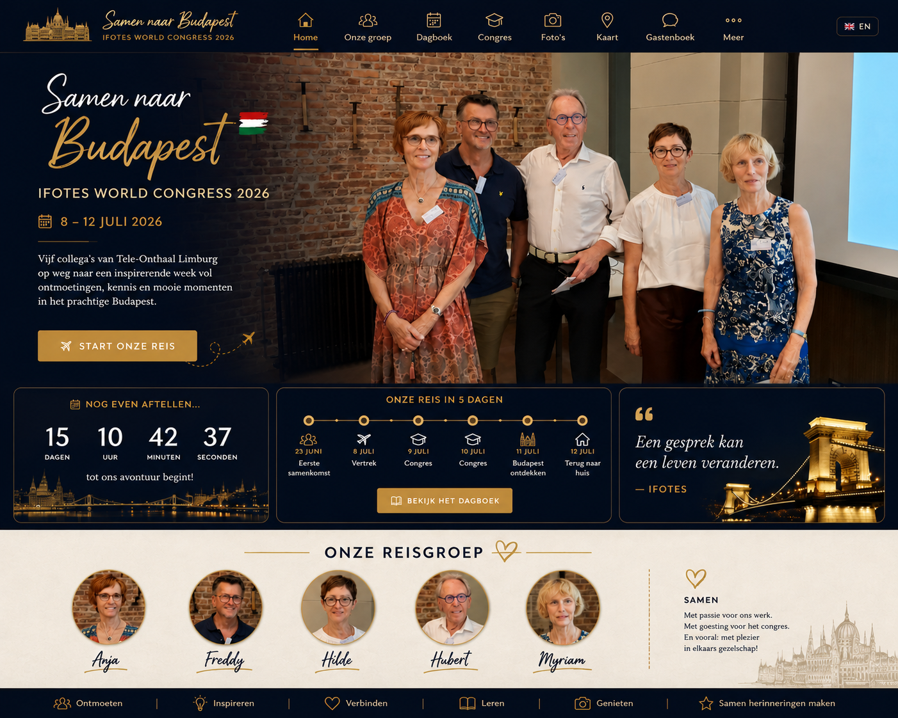
Tele-Onthaal Limburg naar Hongarije
Samen naar Budapest
IFOTES World Congress 2026
8 – 12 juli 2026
—dagen
—uren
—min.
Waar het begon
Elke reis begint met een eerste ontmoeting.
Op 23 juni kwamen wij, vijf vrijwilligers van Tele-Onthaal Limburg, samen ter voorbereiding van onze deelname aan het IFOTES World Congress 2026 in Budapest.
Wat begon als een praktische voorbereiding groeit uit tot een reis vol ontmoeting, inspiratie en verbondenheid. Via deze website nemen we familie, vrienden en collega’s graag mee in ons verhaal.
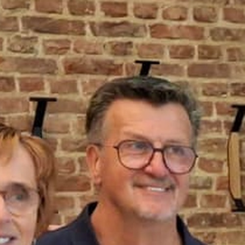
Onze reisgroep
Vijf mensen. Eén verhaal.
We vertrekken elk met eigen verwachtingen, ervaringen en dromen. Samen vormen we één reis naar Budapest.
Klik op een foto om het persoonlijke verhaal te lezen.
Reisdagboek
De reis groeit met ons mee.
Vanaf 8 juli vullen we deze dagen aan met foto’s, korte verslagen en mooie momenten.
Fotogalerij
De eerste beelden.
Vandaag tonen we waar het verhaal begon en waar de reis ons naartoe brengt. Vanaf morgen vullen we dit aan met echte momenten uit Budapest.
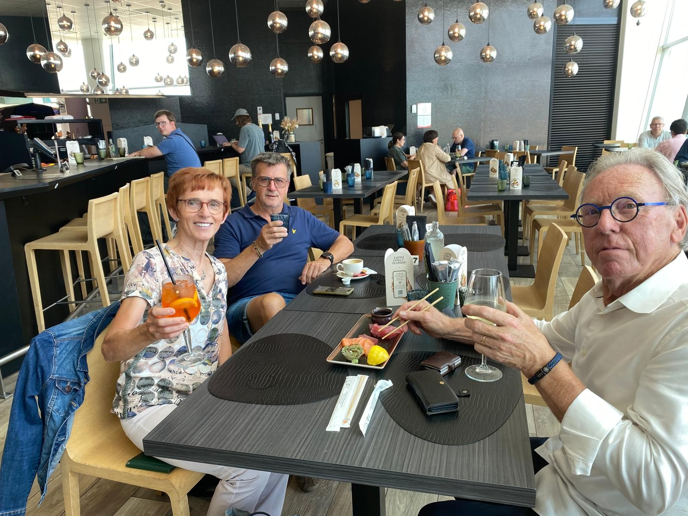
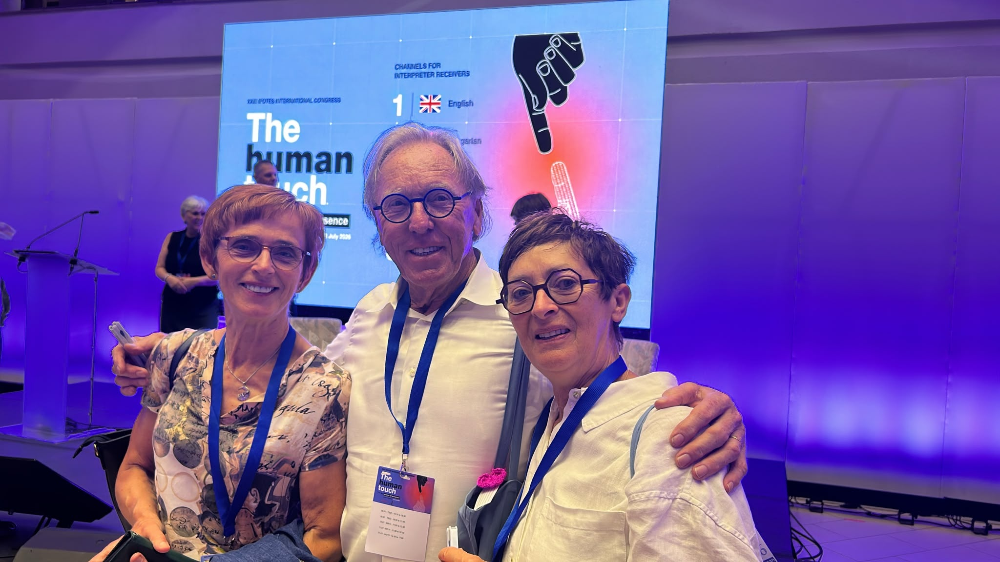
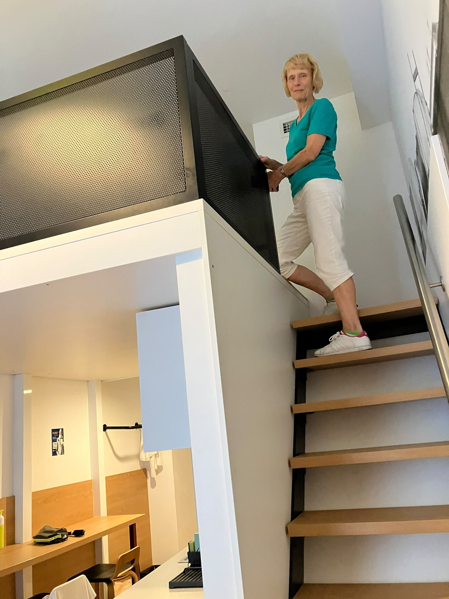
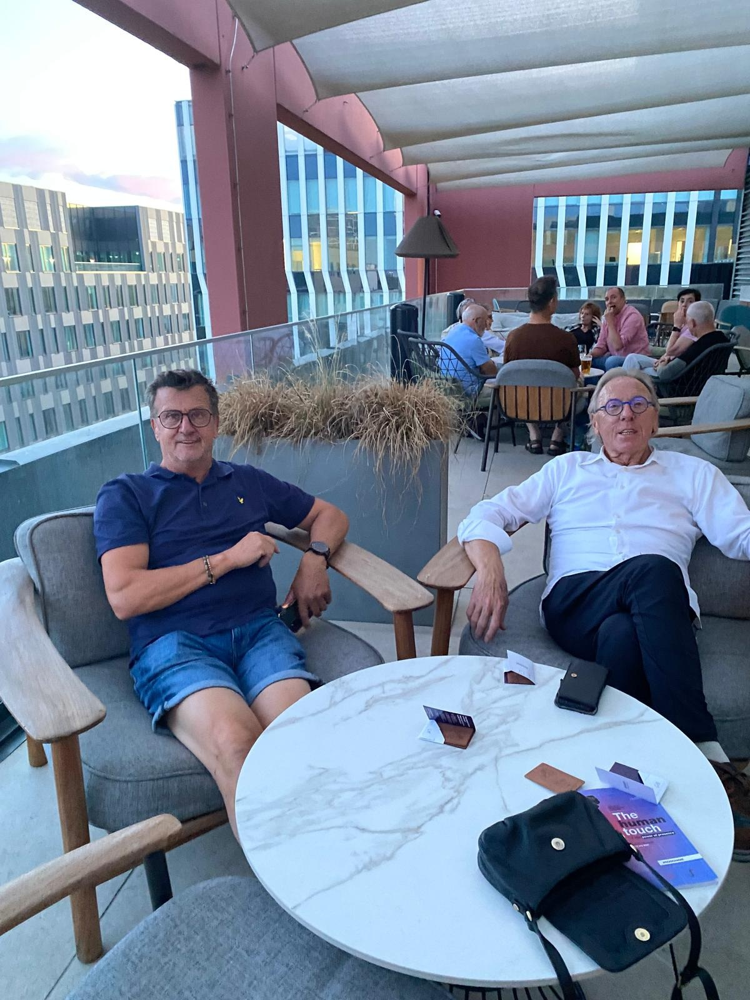
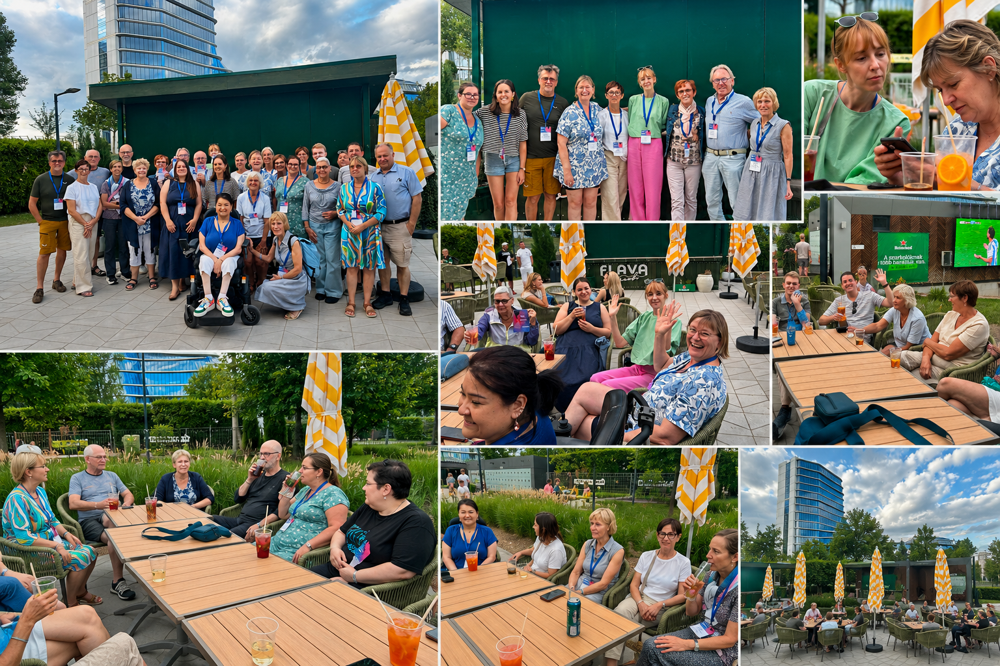
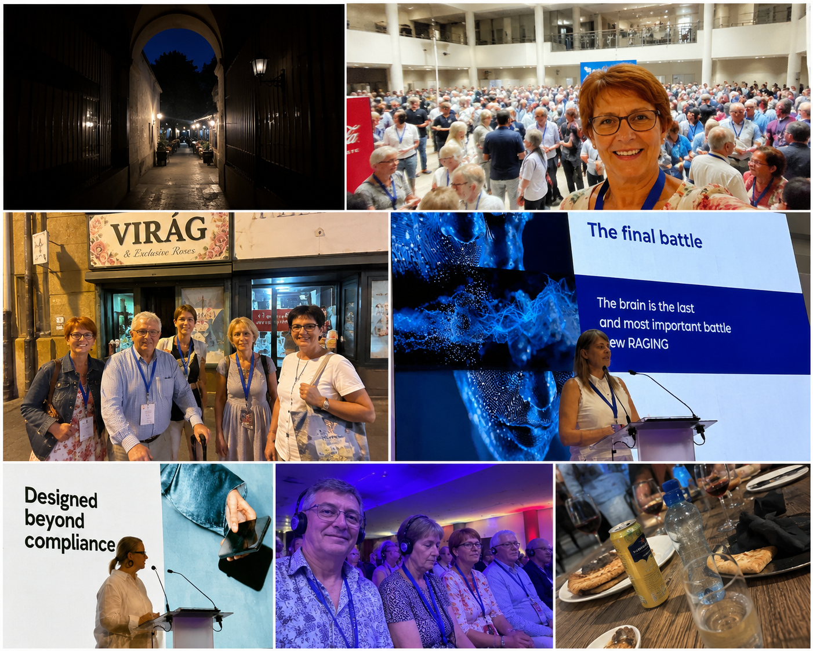
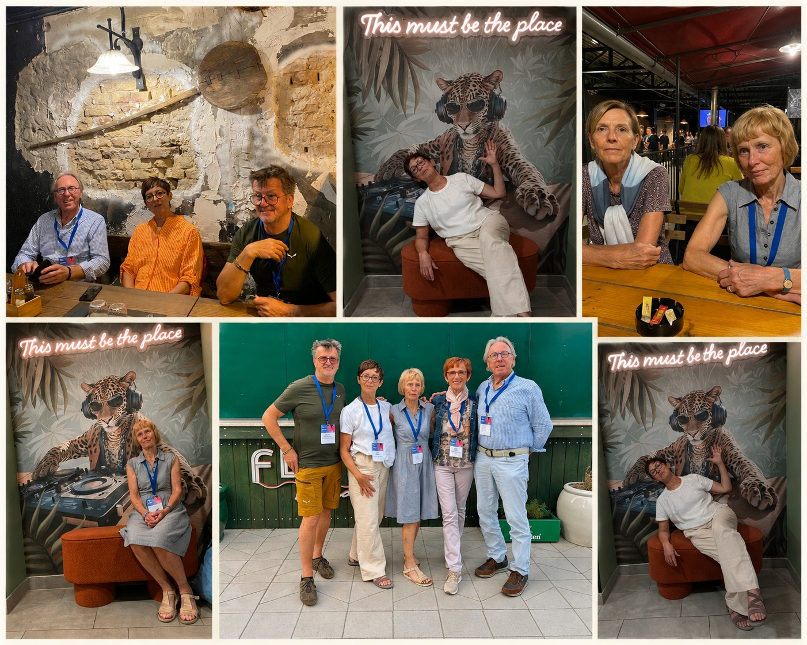
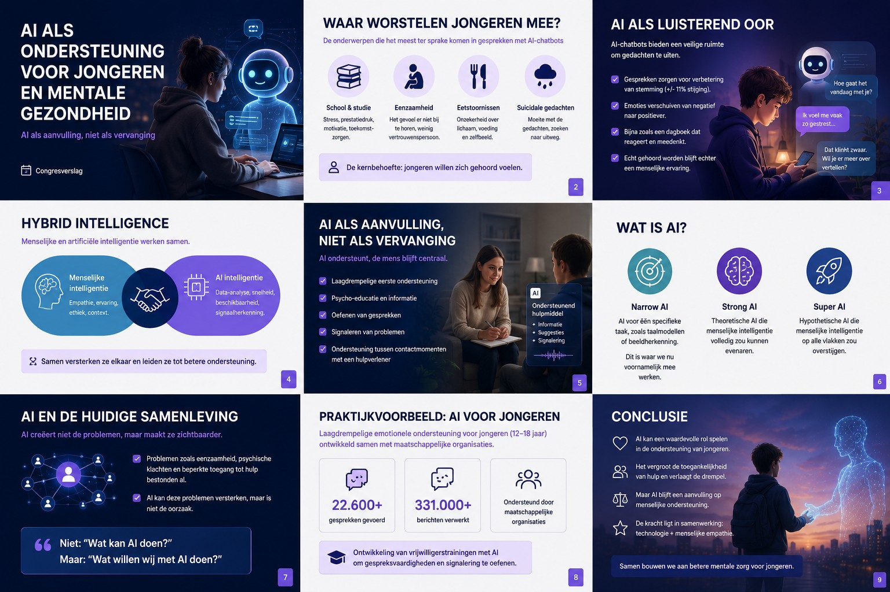
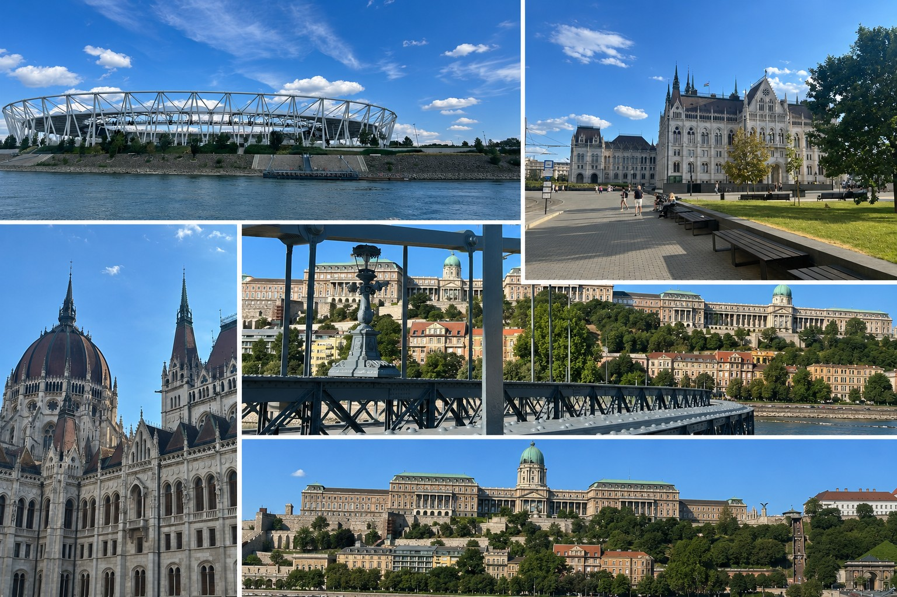
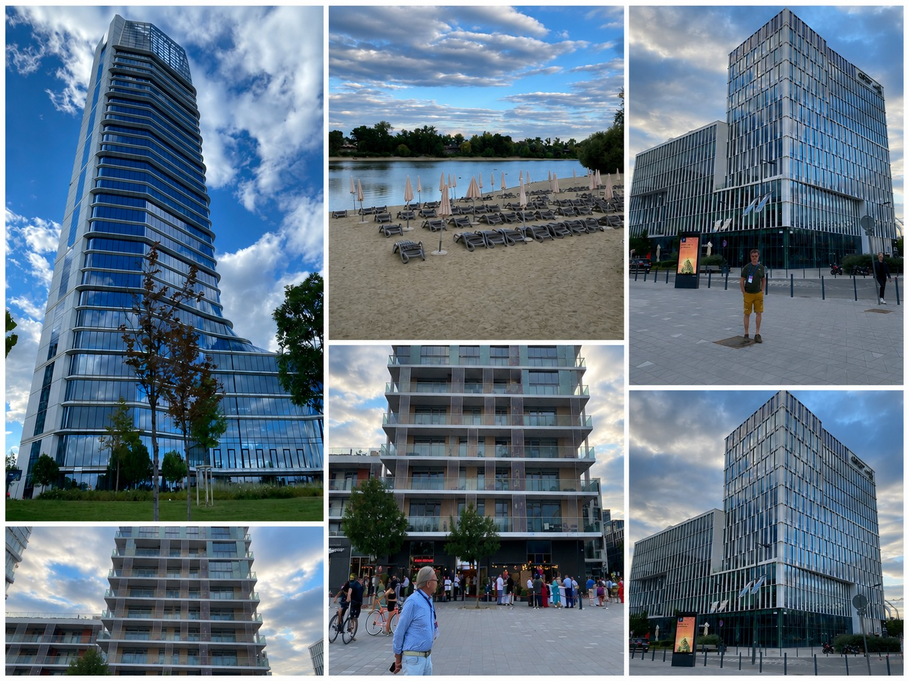
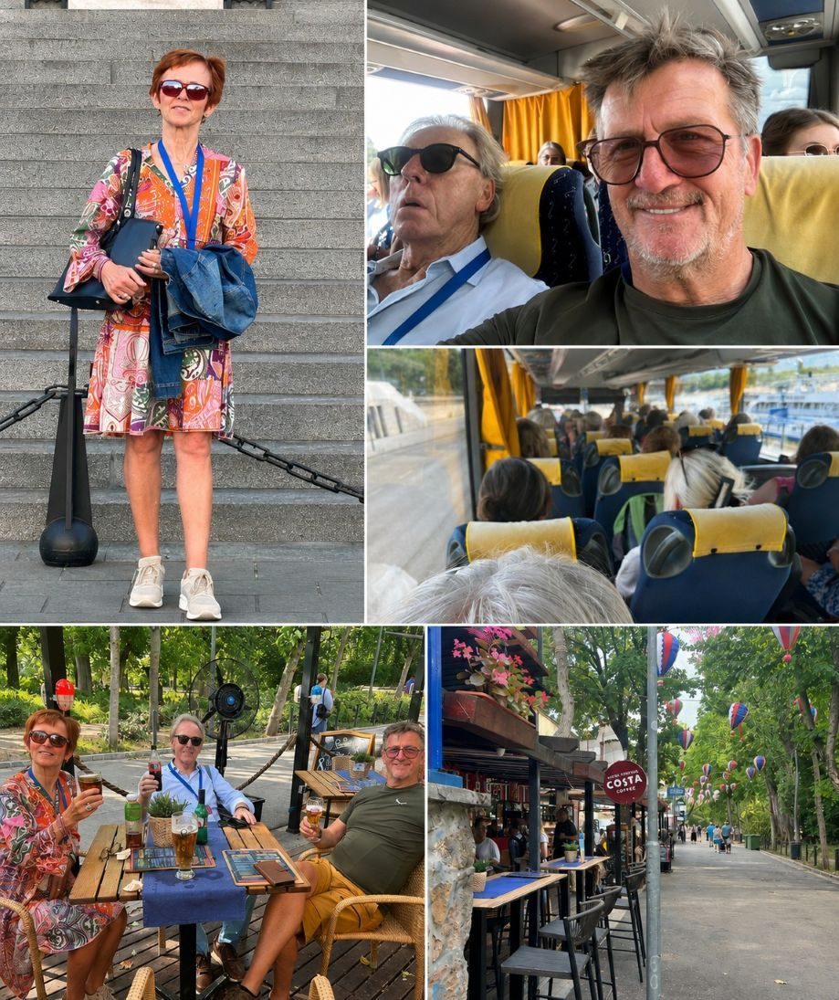
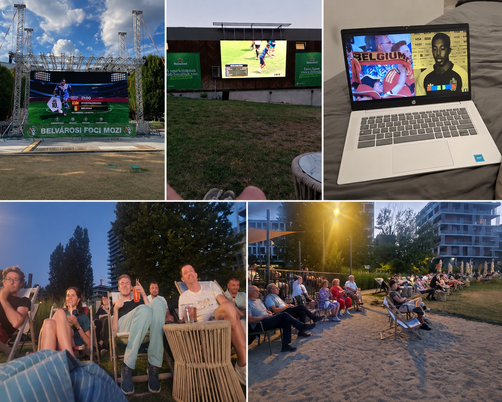